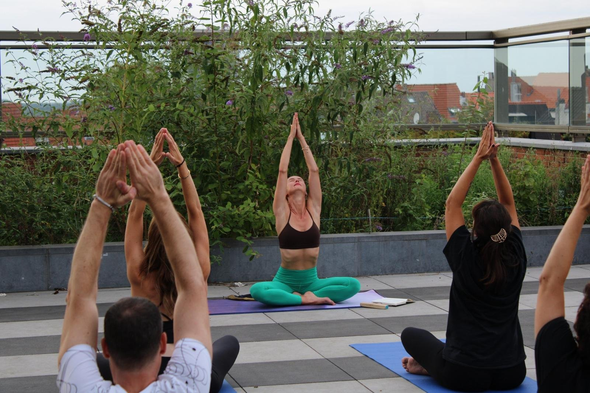
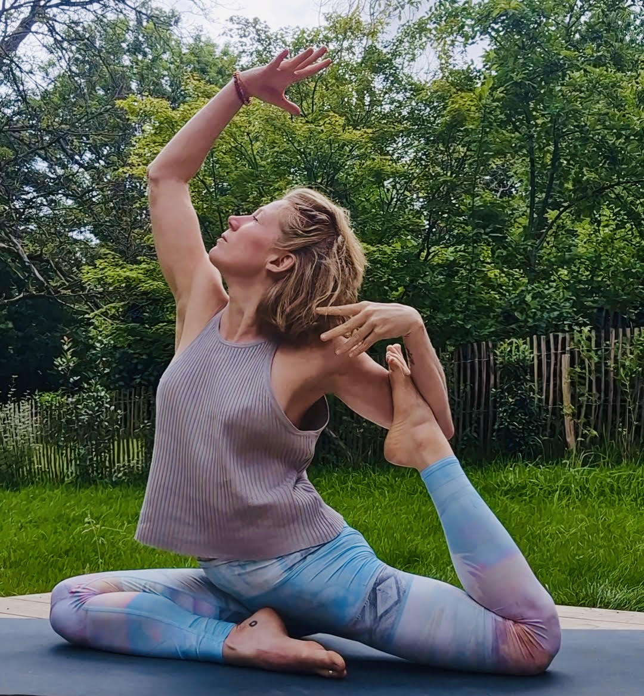
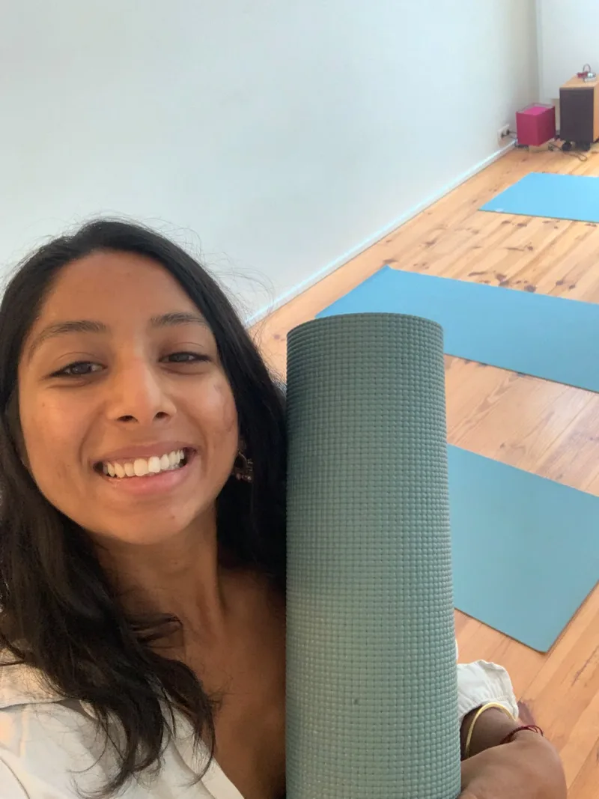
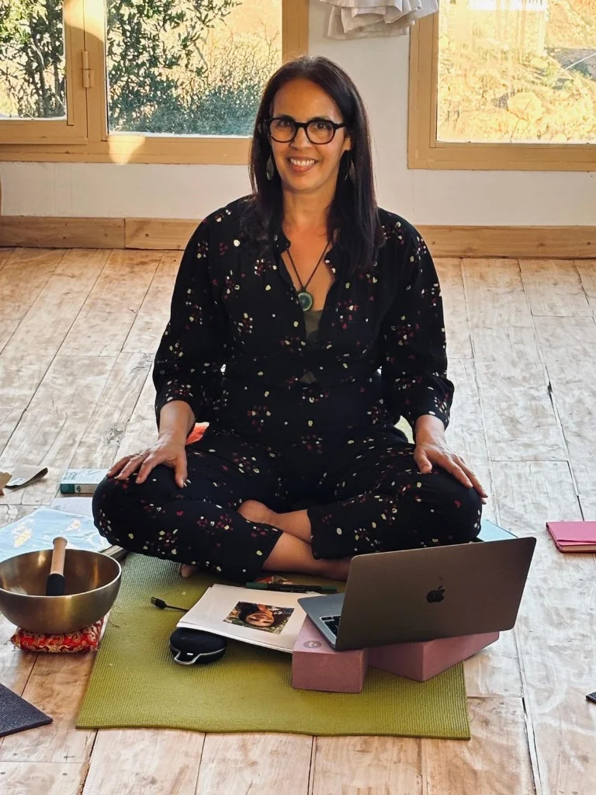
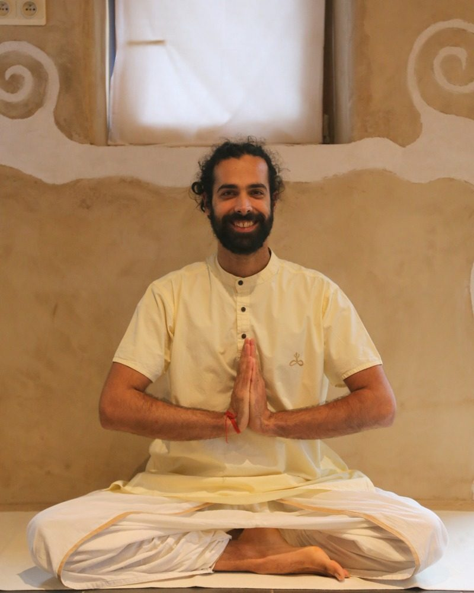
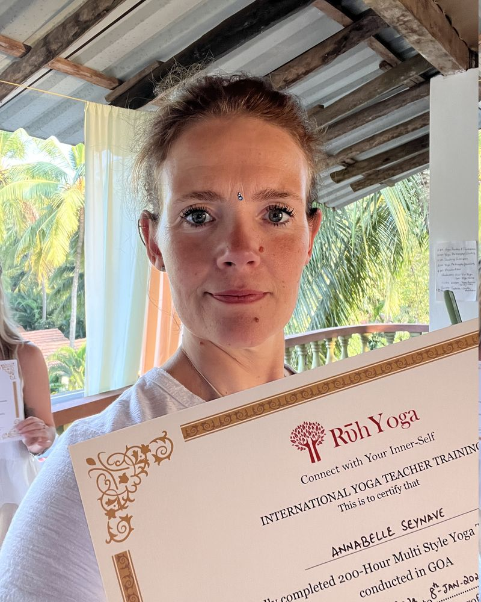
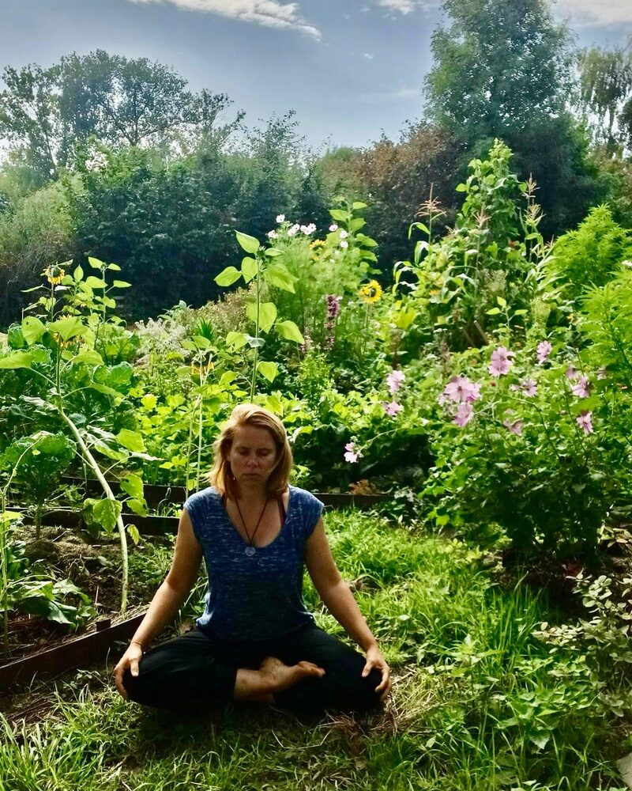

Professeurs
Les fondateurs et professeurs de Santosha
Fondateurs de Santosha

Thierry Van Brabant
Fondateur & Professeur
Enseigne le Hatha Yoga à Jodoigne et Bruxelles. Formateur de professeurs de yoga avec une longue expérience pédagogique.

Julie Van Brabant
Fondatrice & Professeure
Enseigne le yoga depuis une quinzaine d'années, à Bruxelles et Jodoigne. Spécialiste yoga enfants (YogaKiddy) et accompagne des retraites en Espagne.
Professeurs à Santosha

Charlotte Krack
Vinyasa Yoga
Bruxelles

Claire Fossay
Hatha / Nidra Yoga
Bruxelles

Corinne Willame
Hatha Yoga Alignement
Bruxelles

Fabienne Weynant
Yoga pour voir clair
Bruxelles

Gwennaëlle Wuytack
Yoga Enfants
Bruxelles
Isabelle Magnée
Pilates
Jodoigne

Jessica
Himalayan Hatha Yoga
Bruxelles

Malgorzata Luczak
Yoga & Healthy Spine
Bruxelles

Marie Orban
Vinyasa, Prénatal
Bruxelles

Morgane Florens
Vinyasa Yoga
Bruxelles

Olga Emina
Hatha & Vinyasa
Bruxelles

Ornella Altenloh
Vinyasa & Hatha
Bruxelles

Tereza Topkova
Hatha & Vinyasa
Bruxelles
Sandrine Hélin Gava Flament
Hatha Yoga
Bruxelles

Sophie Dussart
Hatha Yoga · La Voie du Cœur
Jodoigne · Jeu 9h–10h

Subhadra Rana
Hatha Yoga traditionnel
Bruxelles

Fadoua Amrani
Yoga Restauratif & Bain Sonore
Bruxelles

Joseph Ponzevera
Hatha Yoga classique
Jodoigne · Mar 20h–21h

Annabelle Seynave
Hatha Yoga
Bruxelles · Dim 17h30–18h30

Anne-Catherine Blanpain
Yoga Parinama · Hatha Raja
Jodoigne · Jeu 20h–21h